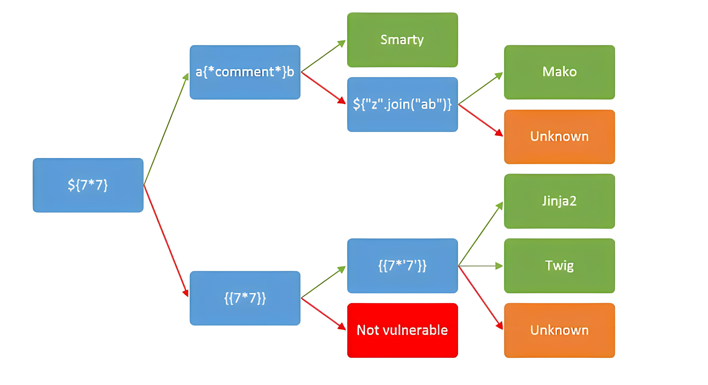

概述
SSTI（Server-Side Template Injection）是一种常见的Web应用程序漏洞，攻击者可以通过SSTI漏洞在Web应用程序中注入恶意模板代码，从而执行任意的命令或者获取敏感信息。
漏洞成因是服务端接收了攻击者的恶意输入以后，未经任何处理就将其作为Web应用模板内容的一部分，模板引擎在进行目标编译渲染的过程中(一般可以执行各种表达式)，执行了攻击者插入的可以破坏模板结构的语句(恶意Payload)，因而可能导致了敏感信息泄露、代码执行、GetShell等问题。其影响范围主要取决于模版引擎的复杂性。
不同代码的后端程序会采用不同的模板引擎，而各个模板引擎注入的语法也有不同。一种常见的方法是使用来自不同模板引擎的语法注入任意数学运算，根据返回的结果来判断，有一张出圈的决策树图如下：

由于本靶场使用Python Flask编写，所以只模拟了基于jinja2模板的SSTI漏洞。除此之外Python还有类似Django、Mako等较为知名的模板会产生SSTI漏洞。